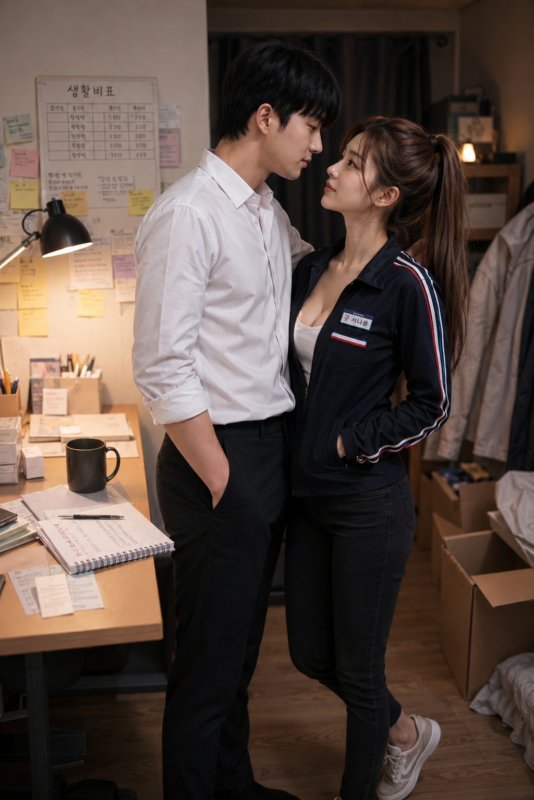

다른 사람들은 돌아갔고, 나윤만 늦게 남았다.
방 안에는 아직 컵과 포스트잇, 노트 사본이 그대로 있었다.
나윤은 그것들을 한 번씩 봤다.
서나윤"안 치웠네요."
김시안"치우면 안 될 것 같아서요."
서나윤"제가 있으면 치울 줄 알았어요?"
김시안"예전의 나라면요."
나윤은 영수증을 접었다.
서나윤"지금은요?"
김시안"지금은 누구 자리 지우는 방식으로 안심시키면 안 된다는 걸 알아요."
나윤은 대답하지 않았다.
대신 시안의 책상 위에 자기 영수증을 올려놓았다.
컵 옆.
포스트잇 옆.
노트 옆.
서나윤"그럼 제 것도 여기 있어도 되죠."
말로 다 정리할 수 없는 확인이 필요해진 순간이었다.
자취방이라는 사적 공간 안에서, 나윤은 다른 사람의 흔적을 치우지 않은 채 자기 자리를 놓았다.

다음 아침, 어머니의 문자가 왔다.
시안은 책상 위 네 가지 흔적을 봤다.
뭘 치울 건데요.
아직 아무도 묻지 않았는데, 이미 들리는 질문이었다.